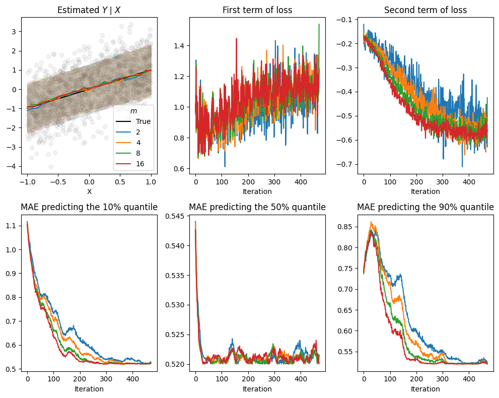
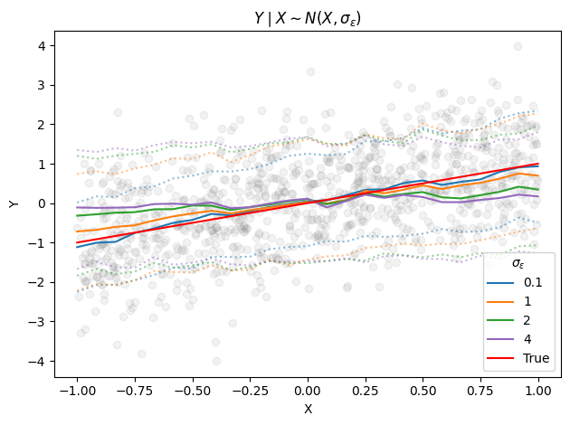

exploring a lightweight approach to distributional regression
paper
Published
May 6, 2025
Modified
September 17, 2025
Traditional regression models predict the conditional mean \(\mathbb E[Y∣X=x]\), or sometimes a few quantiles. In contrast, distributional regression attempt to learn the entire conditional distribution \(Y|X=x\). Having access to the full distribution gives us calibrated uncertainty estimates, probabilistic forecasts, etc.
In a recent seminar I learned about engression, a lightweight and principled approach to distributional regression. Instead of predicting a parametric distribution or optimizing a likelihood, engression trains models to transform noise into samples from \(Y|X=x\), using a proper scoring rule called the energy score. It’s implicit, generative, and remarkably straightforward to implement.
Here, I try to explain the main idea, reproduce some of the paper’s results, and discuss a few of its properties.
In a nutshell
We consider a general class of models \(\mathcal{M} = {g(x, \varepsilon)}\), where each model takes covariates \(x\) and a random vector \(\varepsilon\) as input. The noise vector \(\varepsilon\) is drawn from a fixed distribution independent of \(x\). We imagine each function \(g(x, \varepsilon) \mapsto y\) in \(\mathcal{M}\) as defining a conditional distribution of \(Y \mid X = x\). The “best” \(g\) is found by minimizing the engression loss: \[
\mathbb E \left[ \left \| Y - g(X, \varepsilon) \right \| - \frac{1}{2} \left \| g(X, \varepsilon) - g(X, \varepsilon') \right \| \right]
\]
where \(\varepsilon\) and \(\varepsilon'\) are independent draws from the noise distribution. This is the negative of the energy score, a proper scoring rule. As a result, the authors show that the minimizer recovers the true conditional distribution \(Y \mid X\) — assuming the model class \(\mathcal{M}\) is expressive enough. In practice, this means using neural networks with sufficient capacity.
Intuitively, the loss encourages two things. The first term ensures that the generated samples are close to the observed target. It pulls the predicted distribution toward the actual data. The second term penalizes collapsing all samples to a single point. It forces the model to generate diverse samples, reflecting the variability in the data.
If we only used the first term in the engression loss, our estimated distribution would collapse. Toy example where \(Y|X \sim N(X, 0.1)\)
To minimize the empirical version of the loss using a dataset \(\{(X_i, Y_i): i=1, \dots, n\}\), we sample \(m\) noise vectors \(\varepsilon\)per observation and minimize
Once trained, \(g\) acts as an implicit and generative model for \(Y \mid X\). It doesn’t yield an explicit density \(p(y \mid x)\), but we can generate samples by sampling \(\varepsilon\) and feeding it into \(g\). From these samples, we can estimate means, medians, confidence intervals, etc. as usual.
Note: While we focused on the main loss explored in the paper, the authors mention several generalizations in Appendix D. Specifically, the energy score is one example of a broader class of kernel scores, and engression can in principle use any proper scoring rule that characterizes a distribution (see Section 2). I wouldn’t be surprised if future work develops variants that emphasize the tails, which could be especially useful in risk-sensitive applications.
Pre-additive noise and extrapolation
While minimizing the loss above is sufficient to learn the conditional distribution within the training range (assuming \(g\) is expressive enough), the authors show that, under certain assumptions about the noise structure, engression can also support limited extrapolation.
Most regression and generative models assume that the noise is post-additive. That is, that noise \(\eta\) is added after applying a nonlinear transformation to the covariates: \(Y = g(X) + \eta\). Pre-additive noise instead assumes \(Y = g(X + \eta)\). This helps with extrapolation because, as the authors note
“As such, if the data are generated according to a post-ANM, the observations for the response variable are perturbed values of the true function evaluated at covariate values within the support. We hence generally have no data-driven information about the behaviour of the true function outside the support. In contrast, data generated from a pre-ANM contain response values that reveal some information beyond the support”
The authors formalize this and show that under certain structural assumptions — like smoothness or monotonicity of \(g\), and symmetric pre-additive noise — engression can recover aspects of \(g\) beyond the training range. A key idea is that larger input noise gives you more indirect coverage of nearby regions, so the model can “see” a bit past the edge of the data. I won’t go into the technical details here, but the extrapolation results are interesting and worth checking out if you’re curious.
Implementation
We walk through how simple engression is to implement and attempt to reproduce Figure 4 from the paper, which highlights its extrapolation capabilities using synthetic data.
We implement \(g(x, \varepsilon) \mapsto y\) as a MLP. In the paper, the authors feed the concatenated vector \([x, \varepsilon]\) into a standard (deterministic) network. To keep things flexible and modular — and since \(\varepsilon\) must be sampled independently of \(x\) — we can instead:
Defining g(x, eps)
class gConcatenate(nn.Module):""" g(x, eps) = g([x, eps]), where eps ~ N(0, 1) or Unif(0, 1) """def__init__(self, model, noise_dim, noise_type ='normal', scale =1.0):super(gConcatenate, self).__init__()self.model = modelself.noise_dim = noise_dimself.noise_f = torch.randn if noise_type =='normal'else torch.randself.scale = scaledef forward(self, x):assertlen(x.shape) >=2,'x must have at least 2 dims, where batch is the first' eps =self.noise_f(x.shape[0], self.noise_dim).to(x.device) eps =self.scale * epsreturnself.model(torch.cat([x, eps], dim =1))# examplemodel = MLP(1, [64, 64], 1)g = gConcatenate(model, noise_dim =100, noise_type ='uniform')
Of course, there are many different ways one could define \(g\) beyond concatenating the noise with the input. I’m sure future work will explore them.
Now, define the loss function:
engression loss
def engression_loss(y, preds, p =2, return_terms =False):""" Args: y (torch.Tensor): True target values (batch_size, output_dim). preds (torch.Tensor): Predicted target with independently sampled noise (batch_size, m_samples, output_dim). p (float): The order of the norm to use for the loss calculation. return_terms (bool): If True, return the individual terms of the loss. """assert preds.shape[0] == y.shape[0] and preds.shape[2] == y.shape[1] n, m, D = preds.shape # n is batch_size, m is num_samples, D is output_dim# Term 1: the absolute error between the predicted and true values term1 = torch.linalg.vector_norm(preds - y[:, None, :], ord= p, dim =2).mean()# Term 2: pairwise absolute differences between the predicted values term2 = torch.tensor(0.0, device = preds.device, dtype = preds.dtype)if m >1:# cdist is convinient. The result shape before sum is (n, m, m). sum_pairwise_l1_dists = torch.cdist(preds, preds, p = p).sum() term2 =- sum_pairwise_l1_dists / (n *2* m * (m -1) * D)return (term1 + term2, term1, term2) if return_terms else term1 + term2
And a simple training loop:
Training loop
def train(g, dl, m, lr =0.001, epochs =100, verbose =True): optimizer = torch.optim.Adam(g.parameters(), lr = lr) losses = []for _ inrange(epochs):for x, y in dl: g.zero_grad()# Generate m samples from the model# shape: (batch_size, m, output_dim) preds = torch.stack([g(x) for _ inrange(m)], dim =1) loss = engression_loss(y, preds) loss.backward() optimizer.step() losses.append(loss.item())if verbose: print(loss.item())return losses
Finally, we attempt to replicate Figure 4 from the paper using simulated data with pre-additive noise. For the softplus case, for example, we generate \(X \sim \text{Unif}[-2, 2]\), \(\eta \sim \mathcal N(0, 1)\) and set \(Y = g^\ast(x + \eta)\) with \(g^\ast(t) = \log(1+\exp(t))\). We then train simple MLPs using the engression loss and evaluate their ability to recover the true median — given by \(g^\ast(x)\) — especially outside the range of the training data.
input_dim, hidden_dim, output_dim =1, 128, 1noise_dim, m_train, m_pred =100, 2, 512batch_size =1024epochs =20ds_size =lambda name: 50_000if name in'softplus/square'else100_000# 50k, 100kdepth =lambda name: 2if name in'softplus/square'else3hidden_dim =100lr =lambda name: 5e-2#1e-3 #if name in 'softplus/square' else 1e-4n_runs =20pre_additive_noise =Truesaved_g_preds = {}saved_l1_preds = {}extra ='_post'ifnot pre_additive_noise else''saved_g_preds = torch.load(f'logs/saved_g_preds{extra}.pt')saved_l1_preds = torch.load(f'logs/saved_l1_preds{extra}.pt')f, axs = plt.subplots(2, 2, figsize = (7, 7))for (name, g_star), ax inzip(g_stars.items(), axs.flatten()):# print(name) t = torch.linspace(x_test_lims[name][0], x_test_lims[name][1], 25)[:, None]# Cache to fix plot, etcif name in saved_g_preds: g_preds = saved_g_preds[name]else: g_preds = []for seed inrange(n_runs): set_seed(seed)# model = MLP(input_dim + noise_dim, [hidden_dim] * depth(name), output_dim) model = ResMLP(input_dim + noise_dim, hidden_dim, depth(name), output_dim) g = gConcatenate(model, noise_dim = noise_dim, noise_type ='normal') X, Y = train_data(ds_size(name), input_dim, type= name, pre_additive_noise = pre_additive_noise) dl = torch.utils.data.DataLoader(list(zip(X, Y)), batch_size = batch_size if batch_size elselen(Y), shuffle =True, drop_last =True) losses = train(g, dl, m_train, epochs = epochs, verbose =False, lr = lr(name))# Predict the median using g: sample m_pred per point and take the medianwith torch.no_grad(): g.eval() g_pred = torch.quantile( torch.stack([g(t) for _ inrange(m_pred)], dim =1), q =0.5, dim =1 ) g_preds.append(g_pred) g_preds = torch.stack(g_preds) saved_g_preds[name] = g_preds# L1 baselineif name in saved_l1_preds: l1_preds = saved_l1_preds[name]else: l1_preds = []for seed inrange(n_runs): set_seed(seed) model = ResMLP(input_dim, hidden_dim, depth(name), output_dim) X, Y = train_data(ds_size(name), input_dim, type= name, pre_additive_noise =True) dl = torch.utils.data.DataLoader(list(zip(X, Y)), batch_size = batch_size if batch_size elselen(Y), shuffle =True, drop_last =True) l1_losses = train_l1(model, dl, epochs = epochs, verbose =False, lr = lr(name))with torch.no_grad(): model.eval() l1_preds.append(model(t)) l1_preds = torch.stack(l1_preds) saved_l1_preds[name] = l1_preds X, Y = train_data(ds_size(name), 1, type= name, pre_additive_noise =True) ax.scatter(X[:5000], Y[:5000], color ='gray', alpha =0.1, s =1) ax.plot(t, g_star(t), label =f'True g', color ='red') ax.plot(t, l1_preds.mean(dim =0), color ='tab:blue', label ='L1') ax.fill_between(t.flatten(), l1_preds.quantile(0.10, dim =0).flatten(), l1_preds.quantile(0.90, dim =0).flatten(), alpha =0.2, color ='tab:blue' ) ax.plot(t, g_preds.mean(dim =0), color ='tab:orange', label ='engression') ax.fill_between(t.flatten(), g_preds.quantile(0.10, dim =0).flatten(), g_preds.quantile(0.90, dim =0).flatten(), alpha =0.2, color ='tab:orange' ) ax.set_title(name)axs[0, 0].legend()axs[1, 1].set_ylim((-2, 5))axs[1, 0].set_ylim((-10, 80))f.tight_layout()f.savefig(f'images/figure4{extra}.png', dpi =300, bbox_inches ='tight')torch.save(saved_g_preds, f'logs/saved_g_preds{extra}.pt')torch.save(saved_l1_preds, f'logs/saved_l1_preds{extra}.pt')
Comparing engression and L1 regression’s extrapolation performance on synthetic data. Lines are predicted and true (red) conditional medians. Bands are 10-90 percentiles over 20 runs.
We find, as the authors do, that while both methods perform similarly in-domain, engression is much better extrapolating than L1 regression — at least for monotone and pre-additively generated data.
What if the data is not pre-additive?
If we generate the synthetic data with post-additive noise instead, we see that engression looses its extrapolation capability — in accordance with the theory presented in the paper.
Figure 4 repeated with data generated with post-additive noise instead.
A natural question, then, is whether one can diagnose whether the noise in a real dataset is pre- or post-additive. The paper doesn’t address this directly, but it’s an important question.
While reproducing Figure 4, we also noted a few practical details that matter more than expected. Despite the simplicity of the functions, the authors used between 50k and 100k samples, depending on the function, and relatively large networks. In our experiments, the cubic and logarithmic scenarios struggled with extrapolation until we added residual connections. Also, the noise dimension was set to 100, which seems surprisingly high but turned out to be important.
Hyperparameters
Engression introduces a couple of hyperparameters related to the noise vectors (\(\varepsilon\)) sampled during training: namely, \(m\), the number of noise samples per example, and the distribution from which \(\varepsilon\) is drawn. For example, in their synthetic data experiments, the authors set \(m = 2\) and sample \(\varepsilon \sim \text{Unif}[0, 1]^{100}\).
The parameter \(m\) controls an accuracy–compute trade-off. Increasing \(m\) means we obtain a better Monte Carlo estimate of the population engression loss, and hence of the conditional distribution. However, this also increases compute: the cost of computing the loss grows linearly in \(m\) for the first term but quadratically for the second, since we compute pairwise distances.
That said, since these are Monte Carlo estimates, we expect diminishing returns as \(m\) increases. Another consolation point is that we can combat the quadratic cost by training for more epochs, at the expense of noisier gradients. This allows the model to revisit each example with different noise vectors, increasing the “effective” \(m\).
To test this, we vary \(m\) on a toy example. We observe that, given enough data and epochs, all runs eventually reach similar loss values. However, models with higher \(m\) converge faster and more stably. Perhaps not surprisingly, the conditional median tends to be learned first, with the tails filling in later.
Vary \(m\) on toy data
n =5_000X = torch.rand(n) *2-1# X ~ Unif(-1, 1)Y = X + (torch.randn_like(X) *1) # Y|X ~ N(X, 1)X, Y = X[:, None], Y[:, None]t = torch.linspace(-1, 1, 25)[:, None]# True Y|X quantiles if we assume Y|X ~ N(X, 1)qs = [0.1, 0.5, 0.9]true_quantiles = {q: t + norm.ppf(q) for q in qs}# Estimated Y|X quantiles# [m_train, quantile level] = list of [est quantile], one per batchquantiles = {}input_dim, hidden_dim, output_dim =1, 64, 1noise_dim =50mini_batch_size =32m_pred =512# noise_scale = 1stats = defaultdict(list)m_trains = [2, 4, 8, 16]noise_scales = [0.1, 1, 2, 4]for m_train, noise_scale in product(m_trains, noise_scales): set_seed(69) dl = torch.utils.data.DataLoader(list(zip(X, Y)), batch_size = mini_batch_size, shuffle =False) model = ResMLP(input_dim = input_dim + noise_dim, hidden_dim = hidden_dim, num_residual_blocks =2, output_dim = output_dim) g = gConcatenate(model, noise_dim = noise_dim, scale = noise_scale) optimizer = torch.optim.Adam(g.parameters(), lr =1e-4)for _ inrange(3):for x, y in dl: g.zero_grad()# Generate m samples from the model preds = torch.stack([g(x) for _ inrange(m_train)], dim =1) loss, loss_1, loss_2 = engression_loss(y, preds, return_terms =True) loss.backward() optimizer.step()with torch.no_grad(): q_losses = [] preds = torch.stack([g(t) for _ inrange(m_pred)], dim =1)for q in qs: pred_quantile = torch.quantile(preds, q = q, dim =1) quantiles[m_train, noise_scale, q] = quantiles.get((m_train, noise_scale, q), []) + [pred_quantile]if q in true_quantiles: stats[m_train, noise_scale, q].append( (true_quantiles[q] - pred_quantile.mean(dim =0)).flatten().abs().mean().item() ) stats[m_train, noise_scale, 'loss'].append(loss.item()) stats[m_train, noise_scale, 'loss_1'].append(loss_1.item()) stats[m_train, noise_scale, 'loss_2'].append(loss_2.item())torch.save((quantiles, stats), 'logs/m_noise_scale.pt')

Effects of varying \(m\) on a simple example. Increasing \(m\) yields more stable losses and faster reduction in the error estimating \(Y|X\) quantiles.
While the only formal requirement on the noise distribution is that \(\varepsilon\) be independent of \(x\), its specific choice can have important practical implications. For instance, the authors show that increasing the standard deviation of \(\varepsilon\) can improve extrapolation.
In our toy setup, the effect of \(\sigma_\varepsilon\) resembles a smoothing or locality parameter: large values encourage distant \(x\)’s to map to the same \(y\), producing smoother estimates. Imagining one-dimensional \(\varepsilon\) and \(g(x + \varepsilon)\) (instead of concatenating) should help with this intuition. While larger values benefit extrapolation in other settings (as shown in the paper), here we see that it could hurt in-domain.

Conditional medians learned after training with gaussian noise with different \(\sigma_\varepsilon\), with \(m=2\).
Above, we fixed \(m\) and varied \(\sigma_\varepsilon\). But in general, \(m\), \(\sigma_\varepsilon\), and the dimensionality of \(\varepsilon\) appear to be interdependent. For example (speculating), increasing \(\sigma_\varepsilon\) might require lower noise dimensionality to avoid exploding variance, or perhaps lower \(m\) values suffer more under high-variance noise due to noisier gradient estimates.
It would be interesting to study the interplay between them. Tuning them jointly will likely be important for practical applications.
Real data
So far, we’ve focused on toy problems and synthetic experiments, but the authors of the engression paper also evaluate the method on real datasets in Section 4. They benchmark engression on both univariate and multivariate tasks — including point prediction, interval estimation, and full distributional modeling — and compare it against standard approaches like L2 and L1 regression, as well as quantile regression forests. Engression consistently outperforms these baselines, especially when extrapolating.
In their experiments, the authors use a MLP trained directly on the tabular inputs. But it’s well known that deep nets are not particularly strong on tabular data (although this might be changing). That said, there’s nothing inherent in engression that requires us to use a neural network end-to-end. We could just as easily treat the engression-trained MLP as a modular head and stack it on top of any strong tabular model.
We can stack engression on top of any base model
I tried this idea on a probabilistic forecasting competition, where the goal was to predict a set of conditional quantiles (0.05 through 0.95). The winning submission had used catboost with a multi-quantile loss, followed by conformal prediction. Keeping the base model and replacing the conformalization step with a small engression-trained MLP improved on the winning model’s CRPS score by about 0.04 on the private test set1 – without tuning any of the engression hyperparameters. I thought this was impressive, as conformalization is the go-to calibration method right now. Of course, if you wanted finite-sample guarantees, you could still conformalize on top.
The broader point is that the pre-additive noise assumption underlying engression appears to hold up on real-world datasets — and that stacking engression as a flexible head could make it a practical upgrade to existing tabular pipelines.
Final thoughts
Engression’s main strength lies in its simplicity and flexibility. It requires no parametric assumptions on the output distribution, no likelihood computations, no adversarial training, and no architectural constraints like invertibility. It scales naturally to multivariate \(X\) and \(Y\), and at test time, sampling is fast and easily parallelizable. These properties make it particularly appealing for tasks like forecasting, simulation, or structured prediction, where calibrated uncertainty is important but explicit density evaluation is not.
That said, engression comes with tradeoffs. Because it models distributions implicitly — without yielding closed-form densities — it’s less suitable for inference tasks that rely on likelihoods. Its one-shot sampling may also struggle with complex, multimodal distributions, as the energy score tends to cover modes rather than seek them. In such cases, methods like diffusion models or normalizing flows might offer better performance, albeit at higher computational and implementation cost.
Encouragingly, the authors have begun to explore extensions. A recent paper proposes a multi-step version of engression that improves performance on challenging tasks. Another work introduces distributional autoencoders, combining engression with dimensionality reduction.
Overall, engression is a clever and lightweight approach to distributional regression. I’m excited to see where future research and applications take it. The paper is very readable, and the authors have released their code here if you want to play with it. I’m also learning about python packaging — here’s a small one with the loss and a few wrappers for convenience.
Thanks for reading! If you spot any errors, or have comments or suggestions, feel free to reach out.
Footnotes
For context, the difference between first and second place was 0.06.↩︎